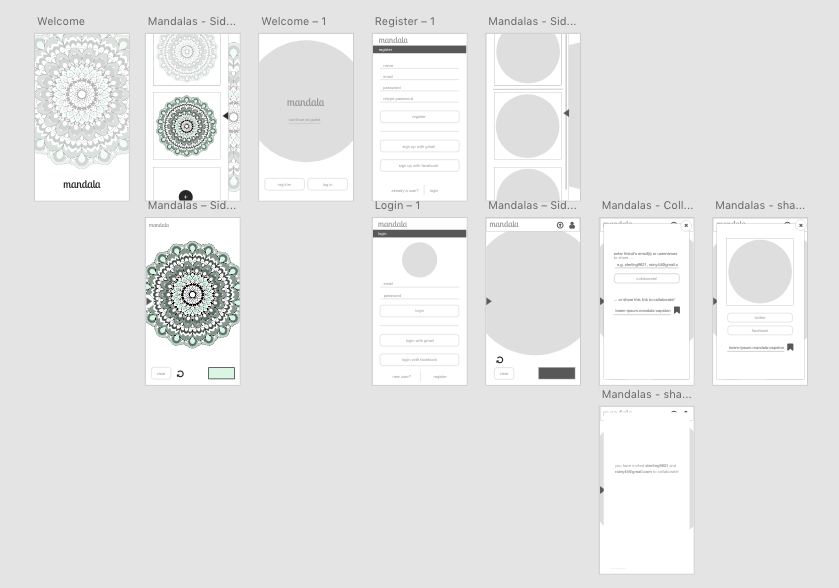

A meditative coloring web application for all ages.
Technologies
HTML5
CSS3
SASS
Javascript ES6
AngularJS
Node.js
Express
PostgreSQL
Heroku
Mocha
Overview
Mandala is a responsive web application that allows users to color mandalas. It is built with AngularJS, Node.js, Express, and PostgreSQL, and hosted on Heroku. This is a 2-week long individual project for my final capstone project at
Galvanize's 24-week web development immersion course.
I created the wireframes for this project in Adobe XD Beta. It was a helpful way visualize the project, plan routes, and choose which views would be necessary for the MVP (minimum viable product).

SVG Manipulation & Data Storage
I chose to work with SVGs for this project because they are XML-based, and therefore easily manipulatable with code. SVGs have path elements which are similar to div elements in HTML. To color the SVG paths, I added click events to each path.
I stored the colors for the SVGs as an array of HEX or RGB values in my database. Each time the user clicks on a path, it makes a PATCH request to the database to update the SVG's color array. A GET request immediately follows to update
the view with the most current color array.
Updating SVG color on user click.
TDD (Test Driven Development) with Mocha
I used Mocha to write route tests for my database. It was a helpful way to test the routes before building out the front end.
Mocha test for 'GET /users/:id' route.
Progressive Enhancement
Because I worked on this project with a limited amount of time (2 weeks), it was important to me that I develop progressively, so that I could at least complete a MVP (minimum viable product) if I ran low on time. For this reason, I started
out by building out the main view, where the user can select mandalas from a slide out menu and color a mandala. It wasn't until after I accomplished this milestone that I built the database using TDD (test driven development) and built
the login pages. Given more time, I would fully style the application (right now it is best viewed on mobile). I would also give the user the option to collaborate with another user in real time using web sockets, and allow the user to
share their colored mandalas on social media.